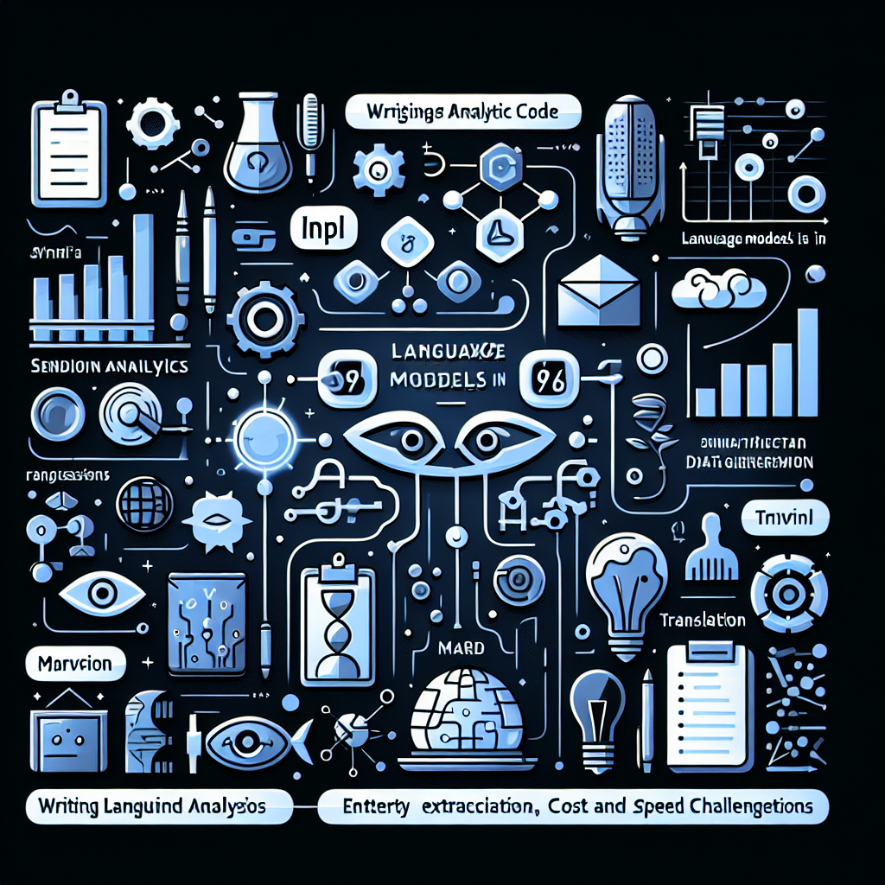

This post will give an overview of how (large) language models (LMs) fit into data engineering, data analyst, and data science workflows.
Use cases
There are three main use cases for language models for data practitioners:
Synthetic data generation
Use in analytic subroutines
Writing analytic code
We’ll describe each and then demonstrate them with code.
Setup
We’ll use Marvin, a toolkit for AI engineering, alongside Ibis, a toolkit for data engineering, to demonstrate the capabilities of language models for data using the default DuckDB backend.
Tip
We’ll use a cloud service provider (OpenAI) to demonstrate these capabilities. In a follow-up post, we’ll explore using local open source language models to achieve the same results.
With Marvin and Ibis, you can replicate the workflows below using other AI service providers, local language models, and over 20+ data backends!
You’ll need to install Marvin and Ibis to follow along:
Import Pydantic, used to define data models for Marvin
4
Set Ibis to interactive mode to display the results of our queries
5
Set the maximum number of rows to display in interactive mode
Synthetic data generation
Language models can be used to generate synthetic data. This is useful for testing, training, and other purposes. For example, you can use a language model to generate synthetic data for training a machine learning model (including a language model). This can be a great alternative to collecting or purchasing data for machine learning training and is easily customizable with language.
With language models, we can reproduce this synthetic data and customize the data produced with natural language!
We’ll start by replicating the data in the one billion row challenge, then move over to our favorite penguins demo dataset to augment existing data with synthetic data.
Weather stations
We can generate synthetic weather stations in a few lines of code:
class WeatherStation(BaseModel): station: str= Field( ..., description="The weather station name", example="Sandy Silicon", ) temperature: float= Field( ..., description="The average temperature in Fahrenheit", example=72.5, )stations = marvin.generate( target=WeatherStation, instructions="Generate fictitious but plausible-sounding weather stations with names that excite data nerds", n=6,)stations
While we’ve only generated six weather stations, you can repeat this process until you get as many as you’d like! You can then use Ibis to generate a billion rows of weather data for these stations as in the one billion row challenge.
Warning
Running this with GPT-4-turbo to generate 1000 weather stations (with n=10 and feeding in all previous attempts to the prompt to attempt avoiding duplicates) costs about $4 USD and resulted in about 150 duplicates. This is rather expensive for synthetic data! You can mitigate this by using a cheaper model (e.g. GPT-3.5-turbo) but may get worse results.
Alternatively, you can generate the data for free on your laptop with a small open source language model! Look out for a future post exploring this option.
Penguin poems
We can augment existing data with synthetic data. First, let’s load the penguins dataset:
Now we define a UDF to generate a poem to describe each penguin:
@ibis.udf.scalar.pythondef penguin_poem( species: str, island: str, bill_length_mm: float, bill_depth_mm: float, flipper_length_mm: float, body_mass_g: float,) ->str: instructions =f"""Provide a whimsical poem that rhymes for a penguin. You have the following information about the penguins: species {species} island of {island} bill length of {bill_length_mm} mm bill depth of {bill_depth_mm} mm flipper length of {flipper_length_mm} mm body mass of {body_mass_g} g. You must reference the penguin's size in addition to its species and island. """ poem = marvin.generate( n=1, instructions=instructions, )return poem[0]
1
Define a scalar Python UDF to generate a poem from penguin data
2
Augment the LM’s prompt with the penguin data
3
Use Marvin to generate a poem for the penguin data
Apply the UDF by mutating the table with the function, using other columns as input
2
Rearrange the columns we care about to the front
3
Cache the table to avoid re-running the UDF
┏━━━━━━━━━━━┳━━━━━━━━━━━┳━━━━━━━━━━━━━━━━━━━━━━━━━━━━━━━━━━━━━━━━━━━━━━━━━━━━━━━━━━━━━━━━━━━━━━━━━━━━━━━━━━━┳━━━━━━━━━━━━━━━━┳━━━━━━━━━━━━━━━┳━━━━━━━━━━━━━━━━━━━┳━━━━━━━━━━━━━┳━━━━━━━━┳━━━━━━━┓
┃ species ┃ island ┃ poem ┃ bill_length_mm ┃ bill_depth_mm ┃ flipper_length_mm ┃ body_mass_g ┃ sex ┃ year ┃
┡━━━━━━━━━━━╇━━━━━━━━━━━╇━━━━━━━━━━━━━━━━━━━━━━━━━━━━━━━━━━━━━━━━━━━━━━━━━━━━━━━━━━━━━━━━━━━━━━━━━━━━━━━━━━━╇━━━━━━━━━━━━━━━━╇━━━━━━━━━━━━━━━╇━━━━━━━━━━━━━━━━━━━╇━━━━━━━━━━━━━╇━━━━━━━━╇━━━━━━━┩
│ string │ string │ string │ float64 │ float64 │ int64 │ int64 │ string │ int64 │
├───────────┼───────────┼───────────────────────────────────────────────────────────────────────────────────┼────────────────┼───────────────┼───────────────────┼─────────────┼────────┼───────┤
│ Adelie │ Torgersen │ In Torgersen's chilly clime, a penguin dwells in rhythm and rhyme,\nAn Adelie, s… │ 36.7 │ 19.3 │ 193 │ 3450 │ female │ 2007 │
│ Adelie │ Torgersen │ On Torgersen's icy stage, beneath the sky's wide dome,\nLives a sleek Adelie, in… │ 39.3 │ 20.6 │ 190 │ 3650 │ male │ 2007 │
│ Gentoo │ Biscoe │ A Gentoo penguin from Biscoe's beach, with a bill quite long,\n50 millimeters an… │ 50.0 │ 15.2 │ 218 │ 5700 │ male │ 2007 │
│ Gentoo │ Biscoe │ The whimsy Gentoo from Biscoe plight,\nWith a bill so dainty, 46.5 mm just right… │ 46.5 │ 13.5 │ 210 │ 4550 │ female │ 2007 │
│ Chinstrap │ Dream │ On Dream Island's frosty sedge, │ 46.6 │ 17.8 │ 193 │ 3800 │ female │ 2007 │
│ Chinstrap │ Dream │ On the island of Dream, so serene and so chill,\nA Chinstrap penguin slides, on … │ 50.5 │ 19.6 │ 201 │ 4050 │ male │ 2007 │
└───────────┴───────────┴───────────────────────────────────────────────────────────────────────────────────┴────────────────┴───────────────┴───────────────────┴─────────────┴────────┴───────┘
Nice! While not particularly useful in this case, the same process can be used for generating product descriptions or other practical applications.
Use in analytic subroutines
We’ve already done this above with the penguin poems to generate some data. However, for real-world use cases the more common use of language models will be to extract structured data from unstructured text.
This includes tasks like:
sentiment analysis
data labeling
named entity recognition
part of speech tagging
summarization
translation
question answering
Each of these tasks can be, to some extent, performed by traditional natural language processing (NLP) techniques. However, modern-day LMs can solve these tasks with a single model, and often with state-of-the-art performance. This drastically simplifies what a single engineer, who doesn’t need a deep understanding of NLP or ML in general, can accomplish.
Sentiment analysis
We can use a language model to perform sentiment analysis on the penguin poems:
@marvin.fndef _sentiment_analysis(text: str) ->float:"""Returns a sentiment score for `text` between -1 (negative) and 1 (positive)."""@ibis.udf.scalar.pythondef sentiment_analysis(text: str) ->float:return _sentiment_analysis(text)
1
Define a Marvin function to perform sentiment analysis
2
Define a scalar Python UDF to apply the Marvin function to a column
3
Apply the Marvin function within the UDF
And apply that UDF to our penguins table:
t = ( t.mutate(sentiment=sentiment_analysis(t.poem)) .relocate(t.columns[:3], "sentiment") .cache())t
1
Apply the UDF by mutating the table with the function
2
Rearrange the columns we care about to the front
3
Cache the table to avoid re-running the UDF
┏━━━━━━━━━━━┳━━━━━━━━━━━┳━━━━━━━━━━━━━━━━━━━━━━━━━━━━━━━━━━━━━━━━━━━━━━━━━━━━━━━━━━━━━━━━━━━━━━━━━━━━━━━━━━━┳━━━━━━━━━━━┳━━━━━━━━━━━━━━━━┳━━━━━━━━━━━━━━━┳━━━━━━━━━━━━━━━━━━━┳━━━━━━━━━━━━━┳━━━━━━━━┳━━━━━━━┓
┃ species ┃ island ┃ poem ┃ sentiment ┃ bill_length_mm ┃ bill_depth_mm ┃ flipper_length_mm ┃ body_mass_g ┃ sex ┃ year ┃
┡━━━━━━━━━━━╇━━━━━━━━━━━╇━━━━━━━━━━━━━━━━━━━━━━━━━━━━━━━━━━━━━━━━━━━━━━━━━━━━━━━━━━━━━━━━━━━━━━━━━━━━━━━━━━━╇━━━━━━━━━━━╇━━━━━━━━━━━━━━━━╇━━━━━━━━━━━━━━━╇━━━━━━━━━━━━━━━━━━━╇━━━━━━━━━━━━━╇━━━━━━━━╇━━━━━━━┩
│ string │ string │ string │ float64 │ float64 │ float64 │ int64 │ int64 │ string │ int64 │
├───────────┼───────────┼───────────────────────────────────────────────────────────────────────────────────┼───────────┼────────────────┼───────────────┼───────────────────┼─────────────┼────────┼───────┤
│ Adelie │ Torgersen │ In Torgersen's chilly clime, a penguin dwells in rhythm and rhyme,\nAn Adelie, s… │ 0.50 │ 36.7 │ 19.3 │ 193 │ 3450 │ female │ 2007 │
│ Adelie │ Torgersen │ On Torgersen's icy stage, beneath the sky's wide dome,\nLives a sleek Adelie, in… │ 0.80 │ 39.3 │ 20.6 │ 190 │ 3650 │ male │ 2007 │
│ Gentoo │ Biscoe │ A Gentoo penguin from Biscoe's beach, with a bill quite long,\n50 millimeters an… │ 0.75 │ 50.0 │ 15.2 │ 218 │ 5700 │ male │ 2007 │
│ Gentoo │ Biscoe │ The whimsy Gentoo from Biscoe plight,\nWith a bill so dainty, 46.5 mm just right… │ 0.70 │ 46.5 │ 13.5 │ 210 │ 4550 │ female │ 2007 │
│ Chinstrap │ Dream │ On Dream Island's frosty sedge, │ 0.00 │ 46.6 │ 17.8 │ 193 │ 3800 │ female │ 2007 │
│ Chinstrap │ Dream │ On the island of Dream, so serene and so chill,\nA Chinstrap penguin slides, on … │ 0.90 │ 50.5 │ 19.6 │ 201 │ 4050 │ male │ 2007 │
└───────────┴───────────┴───────────────────────────────────────────────────────────────────────────────────┴───────────┴────────────────┴───────────────┴───────────────────┴─────────────┴────────┴───────┘
Entity extraction
While not exactly named entity recognition, we can extract arbitrary entities from text. In this case, we’ll extract a list of words that rhyme from the poem:
@ibis.udf.scalar.pythondef extract_rhyming_words(text: str) ->list[str]: words = marvin.extract( text, instructions="Extract the primary rhyming words from the text", )return words
1
Define a scalar Python UDF to extract rhyming words from a poem
2
Use Marvin to extract the rhyming words from the poem
3
Return the list of extracted words
And apply that UDF to our penguins table:
t = ( t.mutate(rhyming_words=extract_rhyming_words(t.poem)) .relocate(t.columns[:4], "rhyming_words") .cache())t
1
Apply the UDF by mutating the table with the function
2
Rearrange the columns we care about to the front
3
Cache the table to avoid re-running the UDF
┏━━━━━━━━━━━┳━━━━━━━━━━━┳━━━━━━━━━━━━━━━━━━━━━━━━━━━━━━━━━━━━━━━━━━━━━━━━━━━━━━━━━━━━━━━━━━━━━━━━━━━━━━━━━━━┳━━━━━━━━━━━┳━━━━━━━━━━━━━━━━━━━━━━━━━━━━━┳━━━━━━━━━━━━━━━━┳━━━━━━━━━━━━━━━┳━━━━━━━━━━━━━━━━━━━┳━━━━━━━━━━━━━┳━━━━━━━━┳━━━━━━━┓
┃ species ┃ island ┃ poem ┃ sentiment ┃ rhyming_words ┃ bill_length_mm ┃ bill_depth_mm ┃ flipper_length_mm ┃ body_mass_g ┃ sex ┃ year ┃
┡━━━━━━━━━━━╇━━━━━━━━━━━╇━━━━━━━━━━━━━━━━━━━━━━━━━━━━━━━━━━━━━━━━━━━━━━━━━━━━━━━━━━━━━━━━━━━━━━━━━━━━━━━━━━━╇━━━━━━━━━━━╇━━━━━━━━━━━━━━━━━━━━━━━━━━━━━╇━━━━━━━━━━━━━━━━╇━━━━━━━━━━━━━━━╇━━━━━━━━━━━━━━━━━━━╇━━━━━━━━━━━━━╇━━━━━━━━╇━━━━━━━┩
│ string │ string │ string │ float64 │ array<string> │ float64 │ float64 │ int64 │ int64 │ string │ int64 │
├───────────┼───────────┼───────────────────────────────────────────────────────────────────────────────────┼───────────┼─────────────────────────────┼────────────────┼───────────────┼───────────────────┼─────────────┼────────┼───────┤
│ Adelie │ Torgersen │ In Torgersen's chilly clime, a penguin dwells in rhythm and rhyme,\nAn Adelie, s… │ 0.50 │ ['clime', 'rhyme', ... +9] │ 36.7 │ 19.3 │ 193 │ 3450 │ female │ 2007 │
│ Adelie │ Torgersen │ On Torgersen's icy stage, beneath the sky's wide dome,\nLives a sleek Adelie, in… │ 0.80 │ ['dome', 'roam', ... +12] │ 39.3 │ 20.6 │ 190 │ 3650 │ male │ 2007 │
│ Gentoo │ Biscoe │ A Gentoo penguin from Biscoe's beach, with a bill quite long,\n50 millimeters an… │ 0.75 │ ['strong', 'song', ... +9] │ 50.0 │ 15.2 │ 218 │ 5700 │ male │ 2007 │
│ Gentoo │ Biscoe │ The whimsy Gentoo from Biscoe plight,\nWith a bill so dainty, 46.5 mm just right… │ 0.70 │ ['plight', 'right', ... +6] │ 46.5 │ 13.5 │ 210 │ 4550 │ female │ 2007 │
│ Chinstrap │ Dream │ On Dream Island's frosty sedge, │ 0.00 │ ['island', 'sedge'] │ 46.6 │ 17.8 │ 193 │ 3800 │ female │ 2007 │
│ Chinstrap │ Dream │ On the island of Dream, so serene and so chill,\nA Chinstrap penguin slides, on … │ 0.90 │ ['chill', 'hill', ... +10] │ 50.5 │ 19.6 │ 201 │ 4050 │ male │ 2007 │
└───────────┴───────────┴───────────────────────────────────────────────────────────────────────────────────┴───────────┴─────────────────────────────┴────────────────┴───────────────┴───────────────────┴─────────────┴────────┴───────┘
Translation
We can translate the penguin poems into Spanish or any language the language model sufficiently knows:
Define a scalar Python UDF to apply the Marvin function to a column
3
Apply the Marvin function within the UDF
And apply that UDF to our penguins table:
t = ( t.mutate(translated_poem=translate_text(t.poem)) .relocate(t.columns[:5], "translated_poem") .cache())t
1
Apply the UDF by mutating the table with the function
2
Rearrange the columns we care about to the front
3
Cache the table to avoid re-running the UDF
┏━━━━━━━━━━━┳━━━━━━━━━━━┳━━━━━━━━━━━━━━━━━━━━━━━━━━━━━━━━━━━━━━━━━━━━━━━━━━━━━━━━━━━━━━━━━━━━━━━━━━━━━━━━━━━┳━━━━━━━━━━━┳━━━━━━━━━━━━━━━━━━━━━━━━━━━━━┳━━━━━━━━━━━━━━━━━━━━━━━━━━━━━━━━━━━━━━━━━━━━━━━━━━━━━━━━━━━━━━━━━━━━━━━━━━━━━━━━━━━┳━━━━━━━━━━━━━━━━┳━━━━━━━━━━━━━━━┳━━━━━━━━━━━━━━━━━━━┳━━━━━━━━━━━━━┳━━━━━━━━┳━━━━━━━┓
┃ species ┃ island ┃ poem ┃ sentiment ┃ rhyming_words ┃ translated_poem ┃ bill_length_mm ┃ bill_depth_mm ┃ flipper_length_mm ┃ body_mass_g ┃ sex ┃ year ┃
┡━━━━━━━━━━━╇━━━━━━━━━━━╇━━━━━━━━━━━━━━━━━━━━━━━━━━━━━━━━━━━━━━━━━━━━━━━━━━━━━━━━━━━━━━━━━━━━━━━━━━━━━━━━━━━╇━━━━━━━━━━━╇━━━━━━━━━━━━━━━━━━━━━━━━━━━━━╇━━━━━━━━━━━━━━━━━━━━━━━━━━━━━━━━━━━━━━━━━━━━━━━━━━━━━━━━━━━━━━━━━━━━━━━━━━━━━━━━━━━╇━━━━━━━━━━━━━━━━╇━━━━━━━━━━━━━━━╇━━━━━━━━━━━━━━━━━━━╇━━━━━━━━━━━━━╇━━━━━━━━╇━━━━━━━┩
│ string │ string │ string │ float64 │ array<string> │ string │ float64 │ float64 │ int64 │ int64 │ string │ int64 │
├───────────┼───────────┼───────────────────────────────────────────────────────────────────────────────────┼───────────┼─────────────────────────────┼───────────────────────────────────────────────────────────────────────────────────┼────────────────┼───────────────┼───────────────────┼─────────────┼────────┼───────┤
│ Adelie │ Torgersen │ In Torgersen's chilly clime, a penguin dwells in rhythm and rhyme,\nAn Adelie, s… │ 0.50 │ ['clime', 'rhyme', ... +9] │ En el frío clima de Torgersen, un pingüino vive en ritmo y rima,\nUn Adelie, ele… │ 36.7 │ 19.3 │ 193 │ 3450 │ female │ 2007 │
│ Adelie │ Torgersen │ On Torgersen's icy stage, beneath the sky's wide dome,\nLives a sleek Adelie, in… │ 0.80 │ ['dome', 'roam', ... +12] │ En el escenario helado de Torgersen, bajo la amplia c\u00fapula del cielo,\nVive… │ 39.3 │ 20.6 │ 190 │ 3650 │ male │ 2007 │
│ Gentoo │ Biscoe │ A Gentoo penguin from Biscoe's beach, with a bill quite long,\n50 millimeters an… │ 0.75 │ ['strong', 'song', ... +9] │ Un pingüino Gentoo de la playa de Biscoe, con un pico bastante largo,\n50 milíme… │ 50.0 │ 15.2 │ 218 │ 5700 │ male │ 2007 │
│ Gentoo │ Biscoe │ The whimsy Gentoo from Biscoe plight,\nWith a bill so dainty, 46.5 mm just right… │ 0.70 │ ['plight', 'right', ... +6] │ La caprichosa Gentoo de Biscoe plight,\nCon un pico tan delicado, 46.5 mm justo.… │ 46.5 │ 13.5 │ 210 │ 4550 │ female │ 2007 │
│ Chinstrap │ Dream │ On Dream Island's frosty sedge, │ 0.00 │ ['island', 'sedge'] │ En la orilla helada de la Isla de los Sue\u00f1os, │ 46.6 │ 17.8 │ 193 │ 3800 │ female │ 2007 │
│ Chinstrap │ Dream │ On the island of Dream, so serene and so chill,\nA Chinstrap penguin slides, on … │ 0.90 │ ['chill', 'hill', ... +10] │ En la isla de Ensue\u00f1o, tan serena y tranquila,\nUn ping\u00fcino barbijo se… │ 50.5 │ 19.6 │ 201 │ 4050 │ male │ 2007 │
└───────────┴───────────┴───────────────────────────────────────────────────────────────────────────────────┴───────────┴─────────────────────────────┴───────────────────────────────────────────────────────────────────────────────────┴────────────────┴───────────────┴───────────────────┴─────────────┴────────┴───────┘
Data labeling
We can label the data by classifying penguins based on their attributes. While this is a contrived example, this could be useful for classifying product feedback or customer support tickets for data organization in any backend Ibis supports:
labels = ["small", "medium", "large"]instructions =f"""You are to classify a penguin into one of {labels} based onits bill length, bill depth, flipper length, and body mass.The averages for these penguins are: - bill length: {penguins["bill_length_mm"].mean().to_pandas()}mm - bill depth: {penguins["bill_depth_mm"].mean().to_pandas()}mm - flipper length: {penguins["flipper_length_mm"].mean().to_pandas()}mm - body mass: {penguins["body_mass_g"].mean().to_pandas()}gUse your best judgement to classify the penguin."""@ibis.udf.scalar.pythondef classify_penguin( bill_length: float, bill_depth: float, flipper_length: float, body_mass: float) ->str:return marvin.classify(f"Penguin with bill length {bill_length}mm, bill depth {bill_depth}mm, flipper length {flipper_length}mm, and body mass {body_mass}g", labels=labels, instructions=instructions, )
1
Define the labels for the classification
2
Construct instructions for the LM based on data
3
Define a scalar Python UDF to classify penguins based on their attributes
Apply the UDF by mutating the table with the function
2
Rearrange the columns we care about to the front
3
Cache the table to avoid re-running the UDF
┏━━━━━━━━━━━━━━━━┳━━━━━━━━━━━┳━━━━━━━━━━━┳━━━━━━━━━━━━━━━━━━━━━━━━━━━━━━━━━━━━━━━━━━━━━━━━━━━━━━━━━━━━━━━━━━━━━━━━━━━━━━━━━━━┳━━━━━━━━━━━┳━━━━━━━━━━━━━━━━━━━━━━━━━━━━━┳━━━━━━━━━━━━━━━━━━━━━━━━━━━━━━━━━━━━━━━━━━━━━━━━━━━━━━━━━━━━━━━━━━━━━━━━━━━━━━━━━━━┳━━━━━━━━━━━━━━━━┳━━━━━━━━━━━━━━━┳━━━━━━━━━━━━━━━━━━━┳━━━━━━━━━━━━━┳━━━━━━━━┳━━━━━━━┓
┃ classification ┃ species ┃ island ┃ poem ┃ sentiment ┃ rhyming_words ┃ translated_poem ┃ bill_length_mm ┃ bill_depth_mm ┃ flipper_length_mm ┃ body_mass_g ┃ sex ┃ year ┃
┡━━━━━━━━━━━━━━━━╇━━━━━━━━━━━╇━━━━━━━━━━━╇━━━━━━━━━━━━━━━━━━━━━━━━━━━━━━━━━━━━━━━━━━━━━━━━━━━━━━━━━━━━━━━━━━━━━━━━━━━━━━━━━━━╇━━━━━━━━━━━╇━━━━━━━━━━━━━━━━━━━━━━━━━━━━━╇━━━━━━━━━━━━━━━━━━━━━━━━━━━━━━━━━━━━━━━━━━━━━━━━━━━━━━━━━━━━━━━━━━━━━━━━━━━━━━━━━━━╇━━━━━━━━━━━━━━━━╇━━━━━━━━━━━━━━━╇━━━━━━━━━━━━━━━━━━━╇━━━━━━━━━━━━━╇━━━━━━━━╇━━━━━━━┩
│ string │ string │ string │ string │ float64 │ array<string> │ string │ float64 │ float64 │ int64 │ int64 │ string │ int64 │
├────────────────┼───────────┼───────────┼───────────────────────────────────────────────────────────────────────────────────┼───────────┼─────────────────────────────┼───────────────────────────────────────────────────────────────────────────────────┼────────────────┼───────────────┼───────────────────┼─────────────┼────────┼───────┤
│ small │ Adelie │ Torgersen │ In Torgersen's chilly clime, a penguin dwells in rhythm and rhyme,\nAn Adelie, s… │ 0.50 │ ['clime', 'rhyme', ... +9] │ En el frío clima de Torgersen, un pingüino vive en ritmo y rima,\nUn Adelie, ele… │ 36.7 │ 19.3 │ 193 │ 3450 │ female │ 2007 │
│ small │ Adelie │ Torgersen │ On Torgersen's icy stage, beneath the sky's wide dome,\nLives a sleek Adelie, in… │ 0.80 │ ['dome', 'roam', ... +12] │ En el escenario helado de Torgersen, bajo la amplia c\u00fapula del cielo,\nVive… │ 39.3 │ 20.6 │ 190 │ 3650 │ male │ 2007 │
│ large │ Gentoo │ Biscoe │ A Gentoo penguin from Biscoe's beach, with a bill quite long,\n50 millimeters an… │ 0.75 │ ['strong', 'song', ... +9] │ Un pingüino Gentoo de la playa de Biscoe, con un pico bastante largo,\n50 milíme… │ 50.0 │ 15.2 │ 218 │ 5700 │ male │ 2007 │
│ large │ Gentoo │ Biscoe │ The whimsy Gentoo from Biscoe plight,\nWith a bill so dainty, 46.5 mm just right… │ 0.70 │ ['plight', 'right', ... +6] │ La caprichosa Gentoo de Biscoe plight,\nCon un pico tan delicado, 46.5 mm justo.… │ 46.5 │ 13.5 │ 210 │ 4550 │ female │ 2007 │
│ medium │ Chinstrap │ Dream │ On Dream Island's frosty sedge, │ 0.00 │ ['island', 'sedge'] │ En la orilla helada de la Isla de los Sue\u00f1os, │ 46.6 │ 17.8 │ 193 │ 3800 │ female │ 2007 │
│ large │ Chinstrap │ Dream │ On the island of Dream, so serene and so chill,\nA Chinstrap penguin slides, on … │ 0.90 │ ['chill', 'hill', ... +10] │ En la isla de Ensue\u00f1o, tan serena y tranquila,\nUn ping\u00fcino barbijo se… │ 50.5 │ 19.6 │ 201 │ 4050 │ male │ 2007 │
└────────────────┴───────────┴───────────┴───────────────────────────────────────────────────────────────────────────────────┴───────────┴─────────────────────────────┴───────────────────────────────────────────────────────────────────────────────────┴────────────────┴───────────────┴───────────────────┴─────────────┴────────┴───────┘
Writing analytic code
Finally, language models can be used to write code. This is more useful with systems around them to execute code, feed back error messages, make adjustments, and so on. There are numerous pitfalls with language models writing code, but they’re fairly good at SQL.
Two approaches
We can think of two approaches to writing analytic code with language models:
Use LMs to write an analytic subroutine
Use LMs to write analytic code
Writing an analytic subroutine
We’ll define a function that writes an Ibis UDF, similar to what we’ve used above:
@marvin.fndef _generate_python_function(text: str) ->str:"""Generate a simple, typed, correct Python function from text."""def create_udf_from_text(text: str) ->str:"""Create a UDF from text."""returnf"""import ibis@ibis.udf.scalar.python{_generate_python_function(text)}""".strip()
1
Define a Marvin function to generate a Python function from text
2
Define a Python function, wrapping a Marvin function with an Ibis UDF
Now we’ll create a UDF from text to count the number of vowels in a string:
udf = create_udf_from_text(""""a function named count_vowels that given an input string, returns an int w/ the number of vowels (y_included as a boolean option defaulted to False). NO DOCSTRING, we don't document our code in this household""")print(udf)
1
Create a UDF from text
import ibis
@ibis.udf.scalar.python
def count_vowels(input_string: str, y_included: bool = False) -> int:
vowels = 'aeiou' + ('y' if y_included else '')
return sum(1 for char in input_string.lower() if char in vowels)
And execute that so the UDF is available:
exec(udf)
1
Execute the UDF code to make it available to call
Now we can augment our table with an analytic subroutine written by a language model:
t = t.mutate( species_vowel_count=count_vowels(t.species), island_vowel_count=count_vowels(t.island),).relocate("species", "species_vowel_count", "island", "island_vowel_count")t
1
Apply the UDF by mutating the table with the function
2
Rearrange the columns we care about to the front
┏━━━━━━━━━━━┳━━━━━━━━━━━━━━━━━━━━━┳━━━━━━━━━━━┳━━━━━━━━━━━━━━━━━━━━┳━━━━━━━━━━━━━━━━┳━━━━━━━━━━━━━━━━━━━━━━━━━━━━━━━━━━━━━━━━━━━━━━━━━━━━━━━━━━━━━━━━━━━━━━━━━━━━━━━━━━━┳━━━━━━━━━━━┳━━━━━━━━━━━━━━━━━━━━━━━━━━━━━┳━━━━━━━━━━━━━━━━━━━━━━━━━━━━━━━━━━━━━━━━━━━━━━━━━━━━━━━━━━━━━━━━━━━━━━━━━━━━━━━━━━━┳━━━━━━━━━━━━━━━━┳━━━━━━━━━━━━━━━┳━━━━━━━━━━━━━━━━━━━┳━━━━━━━━━━━━━┳━━━━━━━━┳━━━━━━━┓
┃ species ┃ species_vowel_count ┃ island ┃ island_vowel_count ┃ classification ┃ poem ┃ sentiment ┃ rhyming_words ┃ translated_poem ┃ bill_length_mm ┃ bill_depth_mm ┃ flipper_length_mm ┃ body_mass_g ┃ sex ┃ year ┃
┡━━━━━━━━━━━╇━━━━━━━━━━━━━━━━━━━━━╇━━━━━━━━━━━╇━━━━━━━━━━━━━━━━━━━━╇━━━━━━━━━━━━━━━━╇━━━━━━━━━━━━━━━━━━━━━━━━━━━━━━━━━━━━━━━━━━━━━━━━━━━━━━━━━━━━━━━━━━━━━━━━━━━━━━━━━━━╇━━━━━━━━━━━╇━━━━━━━━━━━━━━━━━━━━━━━━━━━━━╇━━━━━━━━━━━━━━━━━━━━━━━━━━━━━━━━━━━━━━━━━━━━━━━━━━━━━━━━━━━━━━━━━━━━━━━━━━━━━━━━━━━╇━━━━━━━━━━━━━━━━╇━━━━━━━━━━━━━━━╇━━━━━━━━━━━━━━━━━━━╇━━━━━━━━━━━━━╇━━━━━━━━╇━━━━━━━┩
│ string │ int64 │ string │ int64 │ string │ string │ float64 │ array<string> │ string │ float64 │ float64 │ int64 │ int64 │ string │ int64 │
├───────────┼─────────────────────┼───────────┼────────────────────┼────────────────┼───────────────────────────────────────────────────────────────────────────────────┼───────────┼─────────────────────────────┼───────────────────────────────────────────────────────────────────────────────────┼────────────────┼───────────────┼───────────────────┼─────────────┼────────┼───────┤
│ Adelie │ 4 │ Torgersen │ 3 │ small │ In Torgersen's chilly clime, a penguin dwells in rhythm and rhyme,\nAn Adelie, s… │ 0.50 │ ['clime', 'rhyme', ... +9] │ En el frío clima de Torgersen, un pingüino vive en ritmo y rima,\nUn Adelie, ele… │ 36.7 │ 19.3 │ 193 │ 3450 │ female │ 2007 │
│ Adelie │ 4 │ Torgersen │ 3 │ small │ On Torgersen's icy stage, beneath the sky's wide dome,\nLives a sleek Adelie, in… │ 0.80 │ ['dome', 'roam', ... +12] │ En el escenario helado de Torgersen, bajo la amplia c\u00fapula del cielo,\nVive… │ 39.3 │ 20.6 │ 190 │ 3650 │ male │ 2007 │
│ Gentoo │ 3 │ Biscoe │ 3 │ large │ A Gentoo penguin from Biscoe's beach, with a bill quite long,\n50 millimeters an… │ 0.75 │ ['strong', 'song', ... +9] │ Un pingüino Gentoo de la playa de Biscoe, con un pico bastante largo,\n50 milíme… │ 50.0 │ 15.2 │ 218 │ 5700 │ male │ 2007 │
│ Gentoo │ 3 │ Biscoe │ 3 │ large │ The whimsy Gentoo from Biscoe plight,\nWith a bill so dainty, 46.5 mm just right… │ 0.70 │ ['plight', 'right', ... +6] │ La caprichosa Gentoo de Biscoe plight,\nCon un pico tan delicado, 46.5 mm justo.… │ 46.5 │ 13.5 │ 210 │ 4550 │ female │ 2007 │
│ Chinstrap │ 2 │ Dream │ 2 │ medium │ On Dream Island's frosty sedge, │ 0.00 │ ['island', 'sedge'] │ En la orilla helada de la Isla de los Sue\u00f1os, │ 46.6 │ 17.8 │ 193 │ 3800 │ female │ 2007 │
│ Chinstrap │ 2 │ Dream │ 2 │ large │ On the island of Dream, so serene and so chill,\nA Chinstrap penguin slides, on … │ 0.90 │ ['chill', 'hill', ... +10] │ En la isla de Ensue\u00f1o, tan serena y tranquila,\nUn ping\u00fcino barbijo se… │ 50.5 │ 19.6 │ 201 │ 4050 │ male │ 2007 │
└───────────┴─────────────────────┴───────────┴────────────────────┴────────────────┴───────────────────────────────────────────────────────────────────────────────────┴───────────┴─────────────────────────────┴───────────────────────────────────────────────────────────────────────────────────┴────────────────┴───────────────┴───────────────────┴─────────────┴────────┴───────┘
Note
You could use a LM to write a subroutine that uses a LM! This is an exercise left to the reader.
Writing analytic code
Let’s define a function that outputs SQL:
@marvin.fndef _text_to_sql( text: str, table_names: list[str], table_schemas: list[str], table_previews: list[str],) ->str:"""Writes a SQL SELECT statement for the `text` given the provided `table_names`, `table_schemas`, and `table_previews`. Use newlines and indentation for readability. """def text_to_sql( text: str, table_names: list[str], table_schemas: list[str], table_previews: list[str],) ->str: sql = _text_to_sql(text, table_names, table_schemas, table_previews)return sql.strip().strip(";")
1
Define a Marvin function to write SQL from text
2
Define a Python function to apply the Marvin function to a string
3
Generate the SQL string
4
Strip the trailing whitespace and semicolon that is sometimes generated, as it causes issues with Ibis
We can try that out on our penguins table:
text = ("the count of penguins by species, from highest to lowest, per each island")table_names = ["penguins"]table_schemas = [str(penguins.schema())]table_previews = [str(penguins.limit(5))]sql = text_to_sql(text, table_names, table_schemas, table_previews)print(sql)
1
Create a natural language query
2
Provide the table names, schemas, and previews
3
Generate the SQL string
SELECT
island,
species,
COUNT(*) AS count
FROM
penguins
GROUP BY
island,
species
ORDER BY
island,
COUNT(*) DESC
text ="the highest rated movies w/ over 100k ratings -- movies only"table_names = ["imdb_title_basics", "imdb_title_ratings"]table_schemas = [str(imdb_title_basics.schema()),str(imdb_title_ratings.schema()),]table_previews = [str(imdb_title_basics.limit(5)),str(imdb_title_ratings.limit(5)),]sql = text_to_sql(text, table_names, table_schemas, table_previews)print(sql)
1
Create a natural language query
2
Provide the table names, schemas, and previews
3
Generate the SQL string
SELECT
title.primaryTitle,
rating.averageRating,
rating.numVotes
FROM
imdb_title_basics AS title
JOIN
imdb_title_ratings AS rating
ON
title.tconst = rating.tconst
WHERE
title.titleType = 'movie'
AND rating.numVotes > 100000
ORDER BY
rating.averageRating DESC
r = imdb_title_basics.sql(sql)r
1
Execute the SQL string on the table
┏━━━━━━━━━━━━━━━━━━━━━━━━━━━━━━━━━━━━━━━━━━━━━━━┳━━━━━━━━━━━━━━━┳━━━━━━━━━━┓
┃ primaryTitle ┃ averageRating ┃ numVotes ┃
┡━━━━━━━━━━━━━━━━━━━━━━━━━━━━━━━━━━━━━━━━━━━━━━━╇━━━━━━━━━━━━━━━╇━━━━━━━━━━┩
│ string │ float64 │ int64 │
├───────────────────────────────────────────────┼───────────────┼──────────┤
│ The Shawshank Redemption │ 9.3 │ 2793065 │
│ The Godfather │ 9.2 │ 1945537 │
│ 12 Angry Men │ 9.0 │ 829776 │
│ The Godfather Part II │ 9.0 │ 1321642 │
│ Schindler's List │ 9.0 │ 1404536 │
│ The Lord of the Rings: The Return of the King │ 9.0 │ 1912955 │
│ … │ … │ … │
└───────────────────────────────────────────────┴───────────────┴──────────┘
Issues with language models today
The biggest issue with language models today is the cost, followed by the time it takes to generate responses. Generating a million rows of synthetic data points with state-of-the-art LLMs is prohibitively expensive and slow. Extrapolating from generating 1000 weather stations, it would cost about $4000 USD and take over a week using GPT-4-turbo with OpenAI. Then again, this could be less expensive and time consuming than collecting or purchasing the data. If you’re using language models in your data workflows, you’ll need to be mindful of the cost and bottleneck on speed of data processing likely to be introduced.
Smaller open source language models can reduce this cost to practically zero, but at the expensive of quality. Generating responses may also be slower depending on your hardware setup and other factors.
Language models also have a tendency to generate incorrect outputs in the context of a given task. This is a risk that needs to be tolerated or mitigated with a surrounding system. I would not recommend giving a language model access to a production database without a human in the loop.
Looking forward
In a future post, we’ll explore using open source language models on a laptop to achieve similar results. In general, I expect language models with data to become increasingly commonplace. Some predictions:
small, specialized language models will become common
large language models that require expensive GPU clusters will still be the best for general-purpose tasks
data assistants will be gimmicky for a while, but will eventually become useful
Keep an eye out for our own gimmicky data assistant soon…
Conclusion
To summarize this blog:
from rich importprintwithopen("index.qmd", "r") as f: blog_text = f.read()class BlogSummary(BaseModel):"""Summarizes a blog post""" key_points: list[str] = Field(..., description="The key points of the blog post") one_paragraph_summary: str= Field( ..., description="A one paragraph summary of the blog post" ) one_sentence_summary: str= Field( ..., description="A one sentence summary of the blog post" )summary = marvin.cast( blog_text, target=BlogSummary,)print(summary)
1
Import rich’s print to better display Python objects
2
Read the blog post from a file
3
Define a data model for the blog post summary
4
Use Marvin to cast the blog post to the data model
BlogSummary(key_points=['Language models can generate synthetic data for testing and training.',
'Language models can be integrated into analytic subroutines for tasks like sentiment analysis and entity extraction.',
'Language models can assist in writing analytic code, including SQL queries.'],
one_paragraph_summary='The blog post discusses the integration of language models into data workflows, highlighting their utility in generating synthetic data, enhancing analytic subroutines with tasks like sentiment analysis, and aiding in writing analytic code. It also touches on the cost and speed considerations when using language models, and the potential of smaller, open-source models for reducing costs.',
one_sentence_summary='The blog post explores the use of language models in data engineering, analysis, and science, emphasizing their versatility and the considerations for their cost-effective application.')
To generate a thumbnail from the text:
import osimport httpxifnot os.path.exists("thumbnail.png"): key_points ="\n - ".join(summary.key_points) thumbnail = marvin.paint(f"""Create a beautiful (dark background) thumbnail for the blog post with the following key points:{key_points} The post is about {summary.one_sentence_summary} A one paragraph summary:{summary.one_paragraph_summary} """ ) image = httpx.get(thumbnail.data[0].url)withopen("thumbnail.png", "wb") as f: f.write(image.content)
1
Import extra libraries
2
Check if the thumbnail already exists
3
Use Marvin to generate a thumbnail from the blog post summary
4
Get the thumnail data from the URL
5
Write the data’s content to a file
from IPython.display import ImageImage(filename="./thumbnail.png")
1
Import IPython functionality to display the thumbnail
2
Display the thumbnail

Next steps
Try this out yourself! All you need is an OpenAI account and the code above.